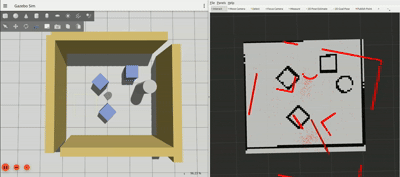

Robotics Software: State Machine, Particle Filter & Computer Vision
Robot behaviors, localization, and vision written in ROS2 and Python.
Overview
Since September 2026, I've been working on a set of robotics software projects for Computational Introduction to Robotics (ENGR3590) at Olin, using ROS2 and Python on Neato robots, both real and simulated: a finite state machine that chains robot behaviors, a particle filter that localizes a robot on a known map, and a computer-vision eye-tracking system that's still in progress.
Code on GitHub: State Machine, Particle Filter.
My role
I built the state machine and the particle filter, each with a teammate, writing in Python and ROS2 and testing with rviz2, Gazebo, and recorded ROS bags. [TODO: which parts of each project you wrote.]
Design & build
Finite state machine
The robot runs three behaviors linked in one finite state machine. It searches by driving forward slowly until its lidar sees an object within 0.6 m, follows that person for 30 seconds at a 0.2 m distance, turns 180° in place, then draws a pentagon with 72° turns at each corner. Following uses proportional control on all 361 lidar readings per scan, and keeps turning toward the last-seen angle for 0.7 s if it loses the target. The bump sensor acts as an emergency stop that overrides every state. Everything runs from a timer-driven loop every 0.1 s instead of sleeps, so the emergency stop keeps working even mid-turn.


The real Neato behaved differently from the simulator: we had to increase the detection radius on the real robot, and because the turn and the pentagon are timed rather than measured, they drift on the physical robot. Adding odometry feedback to those two states is the next improvement.
Particle filter
Odometry drifts, and lidar alone can't tell similar-looking places apart, so the particle filter combines both to estimate the robot's pose on a known map. It starts with 1,050 particles: 1,000 spread around the initial pose estimate and 50 spread uniformly over the map. Each time the robot moves 0.2 m or turns π/6, every particle is moved by the odometry change plus noise, then weighted with a likelihood field that scores how well every fifth lidar beam lines up with the map. The pose estimate is the weighted mean, with heading averaged on the circle so it wraps correctly at ±π. Resampling adds noise, and adaptive injection (augmented Monte Carlo localization) adds random particles when the fit gets worse, which lets the filter recover after being moved.


We tested in stages: unit tests with pytest for weight normalization, angle wrapping, heading averaging, and initialization, then recorded bags in rviz2, then the Gauntlet world in Gazebo.
Eye tracking (in progress)
I'm building a computer-vision eye-tracking system for hands-free cursor control and eye-strain break reminders. [TODO: how it works so far.]
Results
- The Neato follows a person, turns, and draws a pentagon, with a bump-sensor emergency stop that works in every state
- The particle filter converged in 7–8 updates on recorded bags of the MAC 1st floor, with the main particle cluster within 0.22 m on average
- It recovered from a 0.7 m kidnapping after 22 updates; a 2.8 m kidnapping locked onto the wrong spot
[TODO: what you learned, and next steps for the eye-tracking system.]